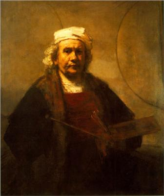

Pablo Picasso
Pablo Diego José Francisco de Paula Juan Nepomuceno María de los Remedios Cipriano de la Santísima Trinidad Ruiz y Picasso
Nacimiento: 25 de octubre de 1881; Málaga, Spain
Fallecimiento: 8 de abril de 1973; Mougins, France
Años de actividad: 1895 - 1973
Nacionalidad: Spanish
Movimiento: Cubismo, Posimpresionismo, Surrealismo
Escuela/grupo: École de Paris
Campo: pintura, escultura, dibujo, litografía, gráficos
Influenciado por: Marc Chagall, Henri Julien Félix Rousseau, El Greco, Francisco de Goya, Paul Gauguin,
Influenciado en: Marc Chagall, Amedeo Modigliani, Willem de Kooning, Jasper Johns, Arshile Gorky, Lee Krasner,
Institución de arte: Real Academia de Bellas Artes de San Fernando
Amigos y compañeros de trabajo: Georges Braque, Constantin Brâncuși, Man Ray, Max Jacob, Amedeo
ARTISTAS RELACIONADOS
 Matthias Grunewald
Matthias Grunewald
El Greco
Nicolas Poussin
Diego Velásquez

Rembrandt
Registrate